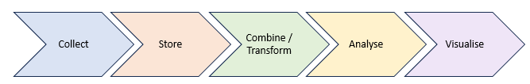
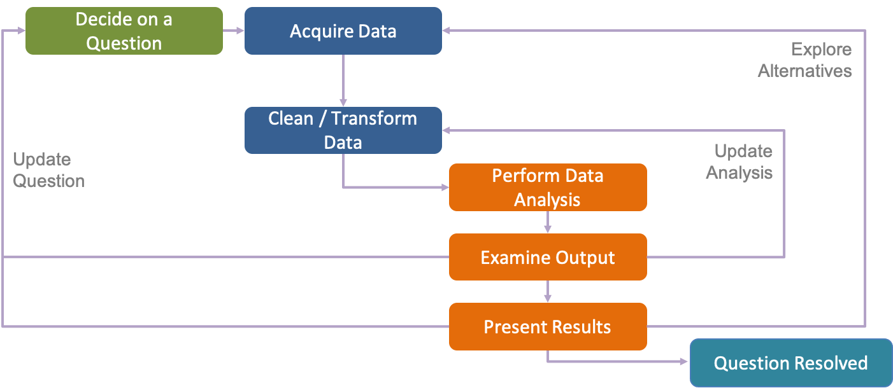
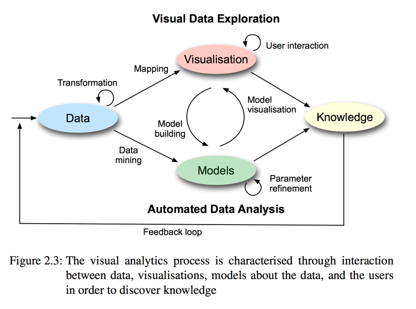
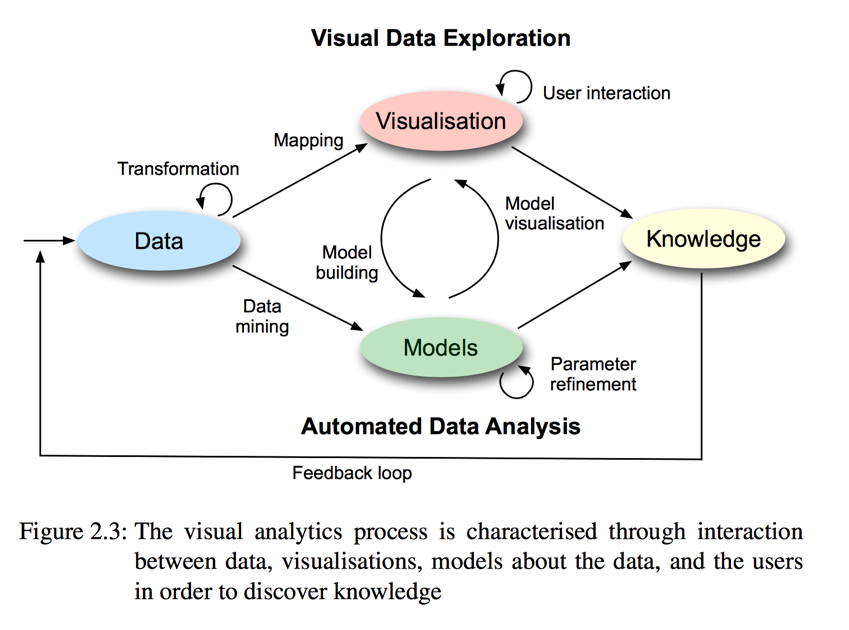

2: A Pipeline Process#
What would a typical pipeline or workflow look like in a cyber security data analytics investigation? We can think of this as a 5-stage process:

Collect: What data do we need to collect, and how will we collect it? This is fundamental as it requires us to carefully think about the problem that we hope to address. Typically, we require a sensor in order to collect data - much like if we want to collect data about the world around us we need to use some sensor or measurement instrument to do this effectively. Sensors could be software-based, such as a Python script that continual checks and records every new login on a particular server, or that logs all the current running processes on a workstation. IoT devices may enable us to sense something about the physical world (for example, temperature) and transmit this data to a centralised server. Humans are also powerful sensors, often overlooked where thinking about cyber security. For example, humans may sense observations about the workplace such as employee engagement or disgruntlement, that if captured effectively could help mitigate potential threats.
Store: How will we store this data? Is it practical to store the volume of data required? Is there are specific format that will make this data more useable for our further analysis and investigation? Common file data formats such as Comma Separated Values (CSV) and Javascript Object Notation (JSON) are popular amongst the data science communities. For larger distributed data collection, databases may be a preferable approach, that may be better suited to manage multiple users either reading or writing data simulateneously. Databases are widely used in complex systems, and typically either hold structured or unstructured data. Sequel (SQL) is a traditional database language used for structured data, whilst NoSQL unstructured methods such as MongoDB have been adopted more recently, that effectively store a collection of JSON documents. Whichever approach is taken, you will need to consider how often is data being written into your data store, how often it is being read from your data store, and how many users will need to do this at any one time, to manage the scalability of how your data is stored.
Combine / Transform: Once we have a way of storing our data, what do we want to do with it? Typically, we may be looking to gather data over time to observe whether there is some change in behaviour, or we may be looking to combine multiple data sources to help explain why a particular observation has occurred, such as a cyber security breach or some suspicious activity on our network. We may also want to transform the data in some manner to make it easier to explore and understand. Aggregation is a widely used process for transforming data. To aggregate data simply means to reduce this data to some form of summary; a common example would be to take the mean value of the data collected over a given time period. For example, given a number of raw packets captured from a network, we may want to know the total number of packets observed every minute, or the average size of the packets received each minute. This provides a much clearer indication when comparing activity over time, rather than studying individual packets. This can also be described as feature extraction since we are deriving a set of features that characterise our raw data, which could then be used to inform a machine learning model. It may also be described as data pre-processing, since we are essentially preparing our data so that it is in a more appropriate format to work with for further investigation. Other examples may include rescaling absolute values, such as rescaling RGB pixel values in an image or rescaling RAM usage to be a percentage of the total RAM available in a system.
Analyse: We now have both the raw data and a feature-based representation of the data. We may sometimes refer to this as having focus and context of our data, where we can both drill down into the detail of each data point whilst observing something about the overall data distribution. With this in mind, we now need to establish what kind of analyse we need for our task. We may wish to examine data based on some thresholding techniques – for example, identify all cases where more than X network connections have been established during a 1-hour period. We may also wish to examine data using signature-based techniques – for example, identify all software executables where the MD5 hash matches against a known set of examples (often described as a dictionary, and widely used for anti-virus detection). There are other more sophisticated forms of analysis we may also want to consider. We may want to perform classification of our data, where we have a set of possible outcomes or groups, and we want to identify which group each instance of our data belongs to (for example, classification of different malware family samples). Another form of analysis that we may wish to perform is forecasting. For example, if we have observed 2 data breaches in the last 12-month period, can we forecast whether we will fall victim again, based on possible mitigations that could be deployed. Clustering is another form that is widely used because it allows us to group similar observations together, to then examine whether they are similar under some set assumptions. This sounds similar to classification, however in classification we have labelled samples to train on, whereas in clustering we do not have any labels. We will discuss this further in Chapter 4. Finally, there is outlier and anomaly detection – a key part of security analysis. Given some observation, can we identify when something is different, and more specifically, under what conditions is it anomalous. We will describe this in further detail in due course.
Visualise: Following our analysis, we need to plan how to communicate our findings. We may use 2-dimensional charts and plots to do this, such as line plots, bar charts, scatter plots, as well as other forms of visual plots. It’s important to appreciate that numerical values in a table also communicate data – sometimes a table of numerical values will perform more effectively than a visualisation, often if the data is small. As the data becomes larger however, visualisation helps to summarise this and convey details clearer. Depending on the task, we may find that 3-dimensional visualisation is appropriate. This could be a 3-dimensional plot, or it could be a 3-dimensional reconstruction of some scene, depending on the application. Importantly, we need to think about how the end-user will receive information from the chosen representation. Focus-and-context is a common technique to allow users to examine some aspect in detail, whilst also showing how this fits within the broader data. More and more nowadays, interactive techniques in visualisation need to be considered, for how a user will learn and understand the data through interaction, such as parameter adjustment, or zoom and filter of the data.
Data Science Workflows#
Whilst we have described a possible workflow above, it’s important to recognise that there is no single right way of doing data science. More specifically, if we keep in mind that we are doing analysis for a purpose, to help inform a story, whether that be exploratory or explanatory, we need to establish the question that we are asking, so that we can strive to answer this.

Here we see another possible workflow, where we decide on a question, and we acquire data to support this question. We clean and transform this data, and we perform our data analysis – much like we have discussed already. However, it is important to recognise that this is not a single one-time process, nor we will necessary ask the right question to being with. In this example, we see three “loops” back to earlier stages of the process – we may need to update our analysis, for example, if we decide that we need to consider more or different features about the data. We may examine our output and present our results, to find that we need more data – for example, if we are examining the presence of an insider threat, do we have sufficient information about the actions they have taken, or do we only have coverage of a subset (e.g., we may have network activity, but we have no record of file access activity). Finally, we may decide that we need to update our question, for example, is our original question not achievable, or do we need to be more specific with how the question is formed?
Two further models of analysis are presented here – both showing how analysis is very much an iterative process that will continually evolve. (Further detail in the book by D. Keim “Mastering the Information Age: Solving Problems with Visual Analytics, 2010) In the literature, often researchers will describe this as having a “human-in-the-loop” or by adopting a “visual analytics loop”. This is more and more common nowadays as dashboards and interactive analysis techniques have become a normal means of practice.
 

Introducing Python Notebooks#
Notebooks are used for rapid prototyping of ideas, to test a theory or to derive some experiment. In particular, when we talk of notebooks we are describing computational notebooks, where we want to jot down ideas, and test these, whilst being able to jot down code samples and examine our results and findings quickly. Scripting languages such as Python and Javascript make it much easier to rapidly construct a piece of code to process some data, rather than having to compile code to source, like you would do in C or Java. Notebook environments provide a clean approach for integrating code, text, graphics, and other forms of media, using a web browser to interact with this rather than relying on traditional IDEs or text editors. Notebooks stem back to software tools such as Mathematica, however, the most commonly used Notebook format today is the Jupyter Notebook (formerly called the iPython notebook – hence the file extension ipynb). Jupyter is an amalgomation of Julia, Python, and R – the three programming languages it was originally designed for – however over the years a number of extensions have been developed to support many more languages, making it a defacto standard for computational notebooks. Notebooks essentially store their data in JSON format, and the Jupyter environment then renders this correctly for user interaction. More recently, Jupyter Lab has been proposed as a browser-based environment for working with notebooks that supports a number of modern features compared to the original Jupyter environment.

Python has grown in popularity significantly over the last 10 years. There are a number of reasons, such as the ability to use the REPL command line (Read-Evaluate-Print-Loop), which links well with our view of iterative practice for data science. Furthermore, the wealth of libraries developed for Python mean that many tasks can be performed quickly using these libraries rather than coding from scratch. In particular, for Data Science, there are a number of libraries that are seen as the standard: NumPy (Numerical Python), SciPy (Scientific Python), Matplotlib (a Python graphing library originating from MATLAB conventions), Pandas (Powerful Data Analysis), as well as scikit-learn (used for machine learning), Tensorflow, Keras and PyTorch (used for deep learning), and NLTK (Natural Language Toolkit).
As part of this broader course, we will focus on a “Hello Security Data Analytics” challenge, to demonstrate how we can use a data science workflow with the Jupyter notebook environment to solve a cyber security challenge. The manager of the security operations centre (SOC) suggests that her analysts are becoming inundated with “trivial” alerts ever since a new data set of indicators was introduced into the Security Information and Event Management (SIEM) system. As a cyber security data scientist, they have asked for your help to reduce the number of “trivial” alerts without sacrificing visibility of security alerts. This is a good problem to tackle through data analysis, and we should be able to form a solid, practical question to ask after we perform some exploratory data analysis and hopefully arrive at an answer that can help the SOC. In the next session, we will look at how we can use Jupyter notebooks to help us solve this problem.